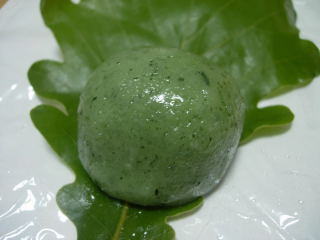

菓子工房 みまつ
島根県出雲市塩冶町1561-9
みまつの柏餅
2009/05/27
ころんと丸い柏餅ですね。丸いので小さく見えますが、結構大きいです。

あんこがいっぱい入ってて甘いですね。もちもちっとして、いい歯ごたえのお餅との相性が良かったです。食べ応えがありました。
大きなお団子を食べているような感じがしました。
2008/03/01
みまつのみたらしだんご
蓋を開けた瞬間、醤油のいい香がしました。

みたらしのタレが、表にも裏にも着いてるので濃い味かな？と思ったんですが、タレがそんなに濃くなかったので丁度いい甘さでした。
大きめでしっとりと柔らかい団子でした。タレが均一についてるので味にムラがなくていいですね。
串の持つ部分が短いので、ちょっと注意が必要でした。
2007/02/22
みまつのロールケーキ
大きくて、ふっくらしてて、生地がとっても甘いロールケーキです。
和菓子屋さんなので、洋菓子屋さんとはまた違う甘さがいいんですよね。
スポンジが口の中で溶けて、砂糖の甘さがスーッと広がる感じが独特でいいですね。
クリームの量は沢山入っているんですが、そんなに甘くないので、スポンジの味の邪魔をしていないですし、甘さが濃くならないようになってます。
2006/05/13
みまつの生ロール
みまつのロールケーキですが、どこのお店のロールケーキよりも生地がカステラっぽくて甘いんですよね。そこがとっても思いっきりがいいです。さすが和菓子屋さん。
スポンジっていうよりもおもいっきりカステラな感じなので、ロールケーキっぽくないんですけど、食べてみると違和感はほとんどないです。
甘いカステラにクリームが入って、マイルドな甘さと食感になってて、なかなか美味しかったです。いい商品ですね。
今日はいっしょにあずき豆腐も食べたんですが、小豆の変なクセとかがなくて、さらっとした上品な味で、こっちも美味しかったです。
2006/04/20
みまつのそば団子
どんな団子かっていうと、みたらし団子です。団子のところにそばが入ってるようです。
茶色いソバ団子にタレがかかってるので、見た目が深い茶色でちょっと不思議な食べ物に見えました。
見た感じちょっと綺麗な色で、高級に見えました。
タレがたっぷり付いてるので、そば味はそんなにわかりませんでした。風味くらいです。
団子は柔らかく、ねちょねちょっとした食感で、最近ソバガキを食べてないのでよくわかりませんが、団子自体はソバガキに似てるような気がしました。
【おいしいものを食べよう。】【たくさん寝よう。】
【ソロ活をしよう!】【季節感のあることをしよう。】【動画視聴はほどほどに。】【当サイトの全てのコンテンツは無断転載禁止です。】